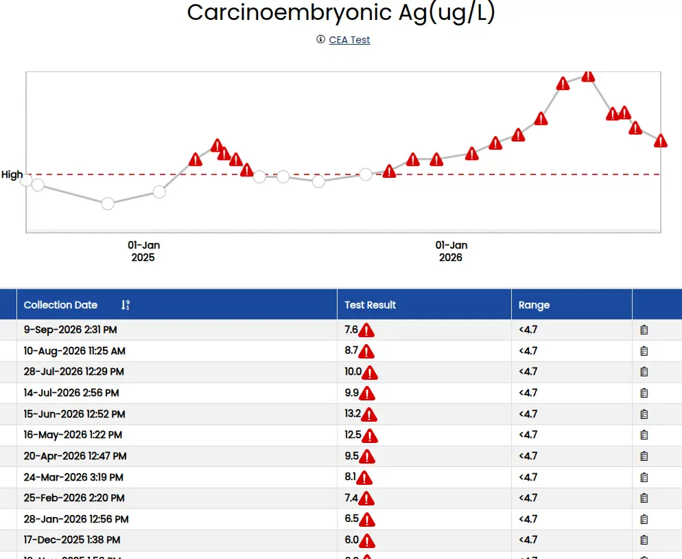

CEA stands for carcinoembryonic antigen. It is a protein found in the tissues of a developing baby. CEA levels normally become very low or disappear after birth. Healthy adults should have very little or no CEA in their body.
This test measures the amount of CEA in the blood, and sometimes in other body fluids. CEA is a type of tumor marker. Tumor markers are substances made by cancer cells or by normal cells in response to cancer in the body.
A high level of CEA can be a sign of certain types of cancers. These include cancers of the colon and rectum, prostate, ovary, lung, thyroid, or liver. High CEA levels may also be a sign of some noncancerous conditions, such as cirrhosis, noncancerous breast disease, and emphysema.
If you were tested before you started treatment for cancer, your results may show:
If you are being treated for cancer, you may be tested several times throughout treatment. These results may show:
If you had a test on a body fluid (CSF, peritoneal, or pleural), a high level of CEA may mean the cancer has spread to that area.